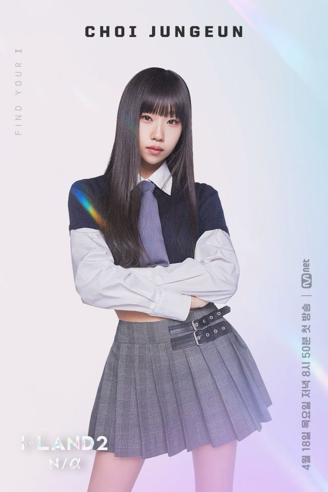
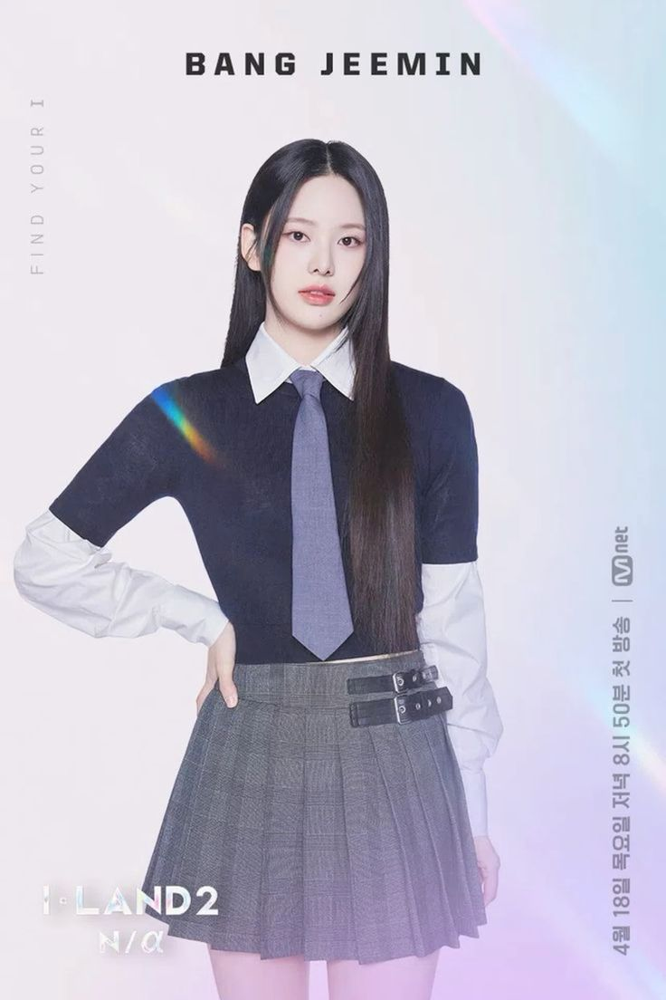
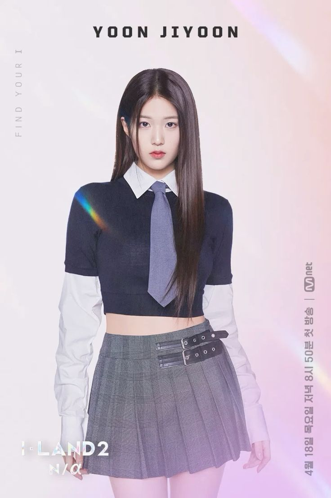
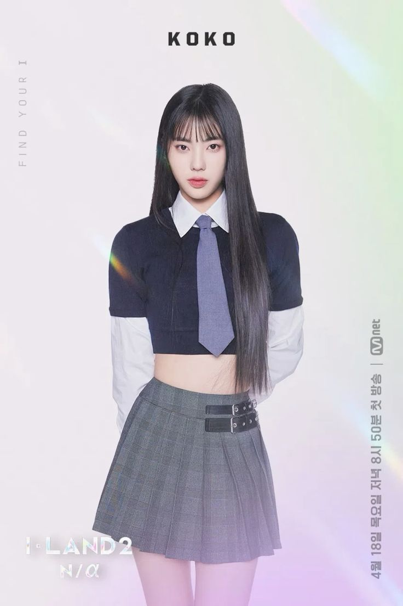
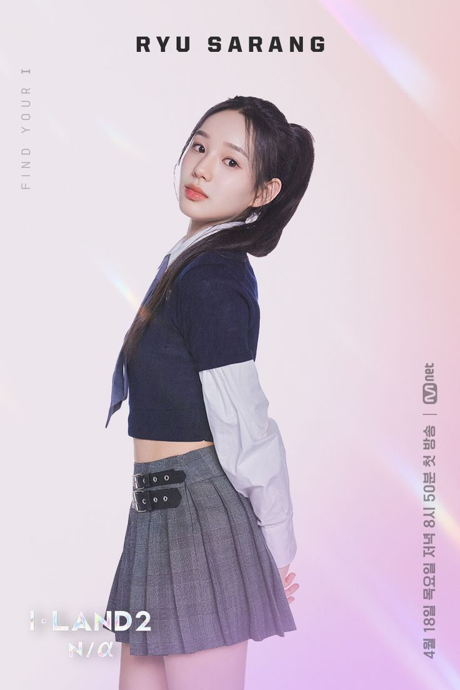
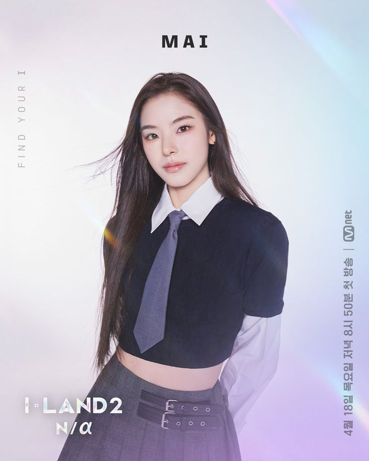
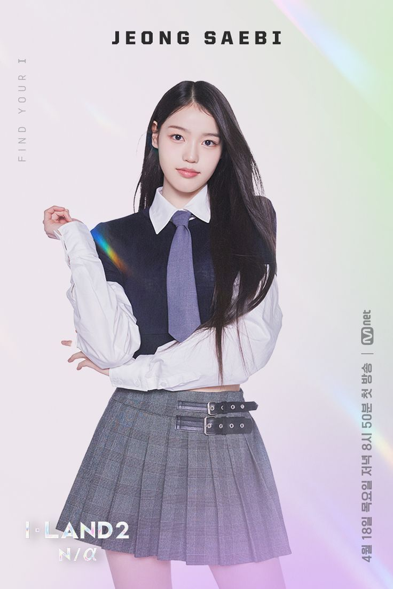

Tentang I-LAND 2: N/a
I-LAND 2: N/a adalah sebuah program survival girl group asal Korea Selatan yang tayang di Mnet pada tahun 2024. Acara ini merupakan kelanjutan dari I-LAND musim pertama yang sebelumnya melahirkan boy group ENHYPEN. Tujuan utama dari I-LAND 2 adalah mencari trainee terbaik yang akan debut dalam sebuah girl group baru. Program ini diproduksi oleh Teddy (produser ternama dari YG dan The Black Label) bersama timnya, serta diselenggarakan oleh CJ ENM (Mnet) bekerja sama dengan The Black Label dan WakeOne. Judul “N/a” diambil dari istilah Not Applicable atau Not Available, yang menggambarkan pencarian identitas baru untuk grup yang akan debut. Sistem acara ini membagi para trainee ke dalam dua area, yaitu I-LAND (area utama) dan GROUND (area cadangan). Para peserta harus melalui serangkaian misi performance yang mencakup vokal, rap, dance, konsep, hingga original song. Penilaian dilakukan berdasarkan kombinasi voting global dari penonton dan evaluasi para mentor. Dari perjalanan panjang kompetisi ini, terpilih tujuh anggota yang debut dalam girl group bernama IZNA, yaitu Choi Jungeun, Bang Jeemin, Yoon Ji-yoon, Koko, Ryu Sarang, Mai, dan Jeong Saebi. Namun pada Agustus 2025, salah satu member yaitu Yoon Ji-yoon resmi keluar dari grup karena masalah kesehatan, sehingga saat ini IZNA beraktivitas dengan enam anggota.
Daftar Peserta
Peringkat 1
Choi Jungeun (lahir 4 Agustus 2007, 18 tahun) berasal dari Incheon, Korea Selatan. Ia dikenal sebagai all-rounder dengan vokal stabil dan aura leader. Jungeun dianggap sebagai “center” alami IZNA karena karisma dan konsistensinya sepanjang acara.
Peringkat 2
Bang Jeemin (lahir 8 Mei 2005, 20 tahun) berasal dari Busan, Korea Selatan. Ia menonjol sebagai spesialis tarian dengan gaya energik dan percaya diri, serta sering disebut sebagai salah satu performer paling menonjol di misi dance.
Peringkat 3
Yoon Ji-yoon (lahir 14 Juli 2005, 20 tahun) juga berasal dari Busan, Korea Selatan. Ia memiliki kemampuan vokal kuat dengan suara khas dan emosional, sehingga menjadi vokalis utama IZNA. Namun, pada Agustus 2025 ia memutuskan keluar dari grup karena alasan kesehatan.
Peringkat 4
Narai Koko (lahir 14 November 2006, 18 tahun) berasal dari Osaka, Jepang. Ia membawa warna internasional dalam grup dengan kemampuan rap serta panggung yang karismatik. Koko dikenal berani dan penuh energi setiap kali tampil.
Peringkat 5
Ryu Sarang (lahir 18 April 2007, 18 tahun) berasal dari Busan, Korea Selatan. Ia adalah salah satu member termuda yang memiliki kemampuan dance kuat dan pesona imut, sehingga banyak fans melihatnya sebagai center masa depan.
Peringkat 6
Mai (lahir 28 Oktober 2004, 21 tahun) berasal dari Gotō, Nagasaki, Jepang. Ia sebelumnya pernah menjadi trainee di JYP Entertainment. Mai memiliki visual menonjol dan vokal yang lembut, menambah daya tarik IZNA di panggung.
Peringkat 7
Jeong Saebi (lahir 22 Januari 2008, 17 tahun) berasal dari Yeongdeungpo-gu, Seoul, Korea Selatan. Ia dikenal dengan vokal stabil serta kemampuan harmonisasi yang baik, dan banyak diapresiasi karena konsistensinya meski jarang jadi sorotan utama.
Rangkuman performance
Episode 1
Episode 1 menayangkan perkenalan trainee sekaligus performance pertama mereka sebelum penentuan posisi awal di I-LAND atau Ground. Beberapa penampilan yang menarik antara lain “UNFORGIVEN” (LE SSERAFIM) yang dibawakan oleh Kim Minsol, Ryu Sarang, Um Jiwon, dan Son Juwon, serta “After LIKE” (IVE) oleh Kim Gyuri, Fuko, Park Yeeun, Kim Chaeeun, dan Kang Jiwon. Performance ini menjadi dasar penilaian awal para mentor dan menentukan siapa saja yang menempati area I-LAND.
Episode 2
fokus pada Signal Song Test dengan lagu “Final Love Song (FLS)”, yaitu lagu tema resmi acara. Semua trainee tampil membawakan lagu ini, tetapi mereka dibagi menjadi dua kelompok besar: I-LAND dan Ground. Penilaian kali ini bukan hanya dari segi kemampuan, tetapi juga sinergi tim. Hasilnya menentukan siapa yang tetap berada di I-LAND dan siapa yang harus turun ke Ground.
Episode 3
Episode 3 menampilkan misi baru bernama Seesaw Game, di mana trainee harus membawakan cover lagu populer K-Pop dalam unit tim. Performance yang ditampilkan di episode ini antara lain “Whistle” (BLACKPINK), “Panorama” (IZ*ONE), “Bad Boy” (Red Velvet), dan “Like Ooh-Ahh” (TWICE). Kontestan dibagi ke dalam tim-tim berbeda, dan hasil battle antar tim menentukan pergerakan peserta antara I-LAND dan Ground. Episode ini juga memperlihatkan strategi pemilihan tim dan part yang mulai menonjolkan karakter masing-masing trainee.
Lagu
- Final Love Song (FLS) adalah signal song dari I-LAND 2: N/a yang pertama kali muncul di episode 2. Lagu ini menjadi ikon acara karena dibawakan oleh seluruh trainee, sekaligus menjadi lagu pembuka perjalanan mereka di survival show.
- IWALY adalah lagu orisinal untuk misi di pertengahan acara, tepatnya di episode 6 dalam 1:1 Position Battle. Lagu ini berkonsep pop dengan nuansa emosional sekaligus powerful, digunakan untuk menguji kemampuan vokal dan ekspresi peserta.
- Drip hadir di episode 8 dalam misi Black Made Test. Lagu ini berkonsep lebih kuat, enerjik, dan penuh karisma, menonjolkan sisi girl crush serta kemampuan performance intens para trainee.
- Fake It digunakan di episode 9 dalam Main Position Test. Lagu ini menjadi salah satu yang paling populer karena menampilkan sisi fierce dan percaya diri kontestan, dan kemudian direkam ulang oleh IZNA untuk dimasukkan dalam mini album debut mereka.
Kabar Terbaru dari Peserta
-
Hayashi Fuko
Setelah mengikuti I-LAND 2: N/a dan sejumlah program survival sebelumnya, Fuko telah dikonfirmasi akan melakukan debut sebagai bagian dari girl group baru di bawah label THE L1VE. Detail lebih lanjut seperti tanggal debut spesifik atau anggota lain belum banyak diungkap. Para penggemar cukup antusias karena perjalanan panjangnya dari survival ke debut nyata.
-
Nam Yuju
Nam Yuju, salah satu peserta I-LAND 2: N/a yang menempati peringkat 9 di final, tidak berhasil masuk ke lineup debut IZNA. Namun, setelah acara berakhir, ia kembali muncul di dunia hiburan dengan ikut serta dalam ajang Unpretty Rapstar: HIP POP Princess, sebuah program survival rap yang menjadi spin-off dari seri Unpretty Rapstar populer di Korea. Program ini menampilkan rapper perempuan muda dan trainee yang bersaing menunjukkan kemampuan rap mereka melalui battle, kolaborasi, dan stage misi. Formatnya mirip dengan kompetisi musik survival lain, tetapi berfokus penuh pada rap, flow, punchline, serta kemampuan menulis lirik sendiri. Dengan ikut serta, Yuju menunjukkan sisi lain dari dirinya sebagai trainee, terutama di bidang hip-hop, bukan hanya vokal atau dance seperti saat di I-LAND 2.
-
Ling Ling
Lingling telah menjadi anggota KIIRAS, girl group global pertama dari agensi LeanBranding. Dia juga ditunjuk sebagai leader grup tersebut. Debut resmi KIIRAS pada 29 Mei 2025 dengan single album “Kill Ma Bo$$”, yang menjadi rilisan pertama KIIRAS. Lingling membuat sejarah sebagai idol K-pop perempuan pertama dari Malaysia dan kini resmi berada di agensi LeanBranding setelah tampil di I-LAND 2 dan meskipun tak masuk lineup IZNA.
Tentang Izna
IZNA adalah girl group asal Korea Selatan yang dibentuk dari survival show I-LAND 2: N/a, program pencarian bakat yang ditayangkan Mnet pada tahun 2024. Grup ini berada di bawah agensi WakeOne dan diproduseri oleh Teddy bersama tim produser The Black Label. Nama “IZNA” memiliki makna “be with us” atau “bersamalah dengan kami”, yang mencerminkan harapan agar grup ini selalu tumbuh bersama para penggemarnya. Formasi awal IZNA terdiri dari Choi Jungeun, Bang Jeemin, Yoon Ji-yoon, Koko, Ryu Sarang, Mai, dan Jeong Saebi. Namun, pada 19 Agustus 2025, Yoon Ji-yoon mengumumkan hengkang dari grup karena masalah kesehatan, sehingga IZNA kini aktif dengan enam anggota.
Kembali ke atas